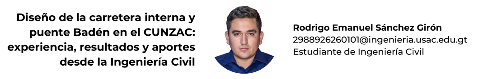

3 Diseño de la carretera interna y puente Badén en el CUNZAC: experiencia, resultados y aportes desde la Ingeniería Civil

3.1 Resumen
El presente articulo describe la experiencia adquirida durante el desarrollo del trabajo de graduación para obtener el título de ingeniero civil, en la modalidad de Ejercicio Profesional Supervisado. El proyecto consistió en el diseño de una carretera interna y un puente tipo badén para el Centro Universitario de Zacapa -CUNZAC- de la Universidad de San Carlos de Guatemala, con el objetivo de resolver uno de los problemas más críticos en el centro, el cual es la accesibilidad interna en el campus, agravándose este problema durante la época lluviosa, cuando el nivel del agua de la quebrada Carcal sube e interrumpe el paso peatonal y vehicular.
El proyecto desarrolló una fase de investigación y otra de servicio técnico profesional. En la fase de investigación, mediante el desarrollo del diagnóstico de inconformidades en el centro, se logró identificar la problemática de la accesibilidad y movilización interna; con base en esto se propuso el desarrollo de la carretera y un puente. En la fase técnica, se empezó con los estudios previos, los cuales abarcaron el levantamiento topográfico, análisis mecánico de suelos y estudio hidrológico. Con esta información se procedió con el diseño geométrico, hidráulico y estructural de la carretera y puente, lo cual resultó en una carretera de aproximadamente 1.5 km y puente badén de 47 metros de largo. En el transcurso de este proceso experimenté desafíos que fortalecieron mis capacidades técnicas y personales, adquiriendo una visión más realista de lo que implica el desarrollo de un proyecto de infraestructura civil y el impacto positivo que este genera en las comunidades más necesitadas.
El proyecto permitirá el acceso y movilidad interrumpida en el centro, beneficiando a más de 1,700 estudiantes del CUNZAC, así como a docentes, personal administrativo y futura comunidad universitaria creciente. Su implementación será un motor clave para el desarrollo integral y el crecimiento futuro no solo del centro universitario, sino también del municipio y departamento de Zacapa.
3.2 Abstract
This article describes the experience gained during the development of the graduation project to obtain the degree of Civil Engineer, under the modality of Supervised Professional Practice. The project consisted of the design of an internal road and a low-water bridge for the Zacapa University Center (CUNZAC) of the University of San Carlos of Guatemala, with the objective of solving one of the most critical problems at the center, which is internal accessibility within the campus. This problem worsens during the rainy season, when the water level of the Carcal stream rises and interrupts pedestrian and vehicular passage.
The project developed in two phases: an investigative phase and a professional technical service phase. In the investigative phase, through the diagnosis of problems at the center, the issue of internal accessibility and mobility was identified, based on which the development of the road and bridge was proposed. In the technical phase, preliminary studies were carried out, including topographic surveying, soil mechanical analysis, and hydrological study. With this information, the geometric, hydraulic, and structural design of the road and bridge was carried out. The result was a road approximately 1.5 km long and a 47-meter low-water bridge. Throughout this process, I experienced challenges that strengthened my technical and personal skills, acquiring a more realistic view of what the development of a civil infrastructure project entails and the positive impact it generates on the neediest communities.
The project will allow uninterrupted access and mobility within the center, benefiting more than 1,700 students of CUNZAC, as well as faculty, administrative staff, and the growing future university community. Its implementation will be a key driver for the comprehensive development and future growth not only of the university center but also of the municipality and department of Zacapa.
3.4 Introducción
El Centro Universitario de Zacapa presenta una problemática importante de accesibilidad y movilización interna, la cual se agrava durante la época lluviosa, debido al aumento del nivel del agua en la quebrada Carcal. Esto ha dificultado el desarrollo y traslado total de sus actividades al campus propio, restringiendo el desarrollo académico y administrativo. De esta problemática surgió el proyecto de diseño de una carretera interna y un puente badén como solución. La experiencia adquirida durante este proceso me permitió aplicar conocimientos teóricos y prácticos en un contexto real, fortaleciendo mi formación profesional.
El objetivo de este artículo es compartir esa experiencia y resaltar el impacto positivo del proyecto, el cual permitirá mejorar las condiciones de acceso, facilitar el uso del terreno institucional y beneficiar directamente a la comunidad universitaria del CUNZAC. El trabajo representa una contribución concreta a la educación pública brindada por la Universidad de San Carlos de Guatemala.
3.5 Artículo
3.5.1 Contexto y justificación del proyecto
El Centro Universitario de Zacapa (CUNZAC) de la Universidad de San Carlos de Guatemala fue fundado en el año 2011; Inició labores en el año 2012 en las instalaciones del colegio Fredy Luna ubicado en la zona 1 de la ciudad de Zacapa. En la actualidad el centro universitario opera en las instalaciones del Colegio María Inmaculada, en las instalaciones del Colegio Nuestra Señora de Fátima, en la zona 1 del municipio de Zacapa y en un terreno propio de 15 manzanas, colindante a la aldea pueblo modelo.
El terreno de 15 manzanas se obtuvo gracias a un comité de profesionales en pro de la creación del centro universitario con instalaciones propias en Zacapa, donde realizaron varias gestiones para obtener un terreno adecuado para la construcción y traslado del centro universitario. Con la obtención del terreno, se empezaron a realizar las gestiones necesarias para empezar con el proceso de construcción de los diferentes módulos de edificios que conformarán el centro universitario. En el año 2017 se inició la construcción de dos edificios, los cuales se finalizaron en el 2019, donde actualmente se encuentran construidos 4 edificios, conformando así los primeros dos módulos de edificios del centro universitario.
Al concluir la construcción de los edificios, estos se abrieron para iniciar las actividades académicas. A pesar de contar con ciertas instalaciones para el desarrollo de actividades específicas, se presenta un problema que frena el desarrollo de las actividades, ya que, durante la época lluviosa, el nivel del agua en la quebrada aumenta considerablemente, imposibilitando el acceso al campus. Además, la falta de una carretera interna resulta en caminos embarrados, lo que impide tanto el ingreso de vehículos como el tránsito seguro de estudiantes, profesores y personal administrativo.
Debido a este problema, dentro de la planificación conjunto del centro se decidió incorporar el diseño de una carretera interna y un puente tipo badén, que atravesara la quebrada permitiendo así el paso seguro de los vehículos. El desarrollo del proyecto se fundamenta en la importancia de garantizar un acceso seguro y confiable al campus durante todo el año. La falta de infraestructura vial en el campus obstaculiza el acceso continuo de los estudiantes, profesores y personal administrativo, y durante la época lluviosa lo imposibilita. Esta limitación no solo perjudica la asistencia a las clases, sino también al desarrollo de otras actividades académicas como prácticas, laboratorios, actividades extracurriculares, entre otras. Esto repercute directamente en el rendimiento académico, y la calidad de profesionales que egresan del CUNZAC.
Al realizar este proyecto, se establecerá una infraestructura sólida y resistente ante las inclemencias climáticas; la carretera y el puente tipo badén asegurarán que los estudiantes, profesores, personal administrativo y visitantes puedan movilizarse de manera segura y eficiente, generando así un entorno propicio para el desarrollo académico, laboral y social en el campus universitario. Al mejorar la conectividad y la accesibilidad, el proyecto contribuirá al crecimiento y desarrollo integral del Centro Universitario de Zacapa de la Universidad de San Carlos de Guatemala.
3.5.2 Experiencia en la recopilación de datos
Se recopilaron datos del sitio, y se efectuaron varias visitas técnicas; también hubo varias pláticas en relación con el proyecto, con el personal administrativo. Pudo evidenciarse la falta de una vía pavimentada, aunado a esto la presencia de la quebrada que atraviesa todo el terreno e interrumpe el paso hacia los módulos ya construidos. Es por ello que se propuso una vía pavimentada y un puente tipo badén para atravesar dicha quebrada en el punto más crítico.
Las visitas realizadas permitieron recopilar datos técnicos y sociales, como la población inscrita en el centro, la cantidad y tipos de vehículos en el día con mayor concurrencia, así como la topografía del lugar (incluyendo el cauce de la quebrada), la extracción de muestras de suelo específicas para la carretera y el puente, las cuales fueron analizadas en el laboratorio de mecánica de suelos de la Facultad de Ingeniería.
Las visitas al sitio fueron fundamentales para definir el trazo de la carretera, ubicar el puente y establecer parámetros reales de diseño. Además, representó un reto al organizar el trabajo en campo, validar información y adaptarse a las condiciones no controladas como el clima.
3.5.3 Estudios técnicos realizados
Para poder comenzar con el diseño del proyecto, se llevaron a cabo varios estudios. Se efectuó el estudio topográfico y se hizo un levantamiento topográfico del terreno, obteniendo la planimetría y altimetría del sitio. En específico se levantó el cauce de la quebrada para realizar posteriormente el estudio hidrológico, y así obtener los parámetros necesarios para los diseños hidráulicos del puente, así como los drenajes longitudinales y transversales).
Figura 3.1: Vista 3D de la topografía del Centro Universitario de Zacapa Universidad de San Carlos de Guatemala
Nota. Elaboración propia.
Con base en la topografía del cauce y la ubicación del campus se realizó el análisis hidrológico, identificando la microcuenca y obteniendo sus parámetros, para así obtener un caudal de diseño bajo un periodo de retorno de 100 años. Ya con en este caudal, se desarrollaron los diferentes diseños hidráulicos, como el drenaje transversal y longitudinal, y el de la tubería a colocar en el puente.
Figura 3.2: Delimitación de la microcuenca, utilizada para determinar los parámetros hidrológicos del estudio
Nota. Elaboración propia, diseñado con QGISS Desktop 3.34.9.
Tanto para el diseño de la carretera como para el diseño del puente, es necesario conocer la resistencia del suelo; para ello se extrajeron dos muestras; una que analizaría su resistencia a través del ensayo triaxial, obteniendo así los tres principales parámetros: la cohesión, densidad y el ángulo de fricción interna, para determinar la capacidad portante de suelo en el sitio donde se colocarán los estribos del puente. La otra muestra sirvió para determinar si el suelo natural es apto para utilizarse como subrasante en la carretera. Se trata del ensayo CBR (California Bearing Ratio). Con este resultado se pudo establecer si el suelo era apto para utilizarse como subrasante, y cuál podría ser el espesor de las capas del pavimento rígido.
3.5.4 Diseño de la infraestructura
Comenzando con la carretera, esta consiste en un circuito de aproximadamente 1.5 km, en el cual se incorporarán vías de retorno y una rotonda. El diseño geométrico de la carretera se basó en una carretera tipo D, según la clasificación por Tránsito Promedio Diario (TPD) de la Dirección General de Caminos (DGC). Para el diseño estructural del pavimento rígido se utilizó el método simplificado de la Portland Cement Association (PCA).
Figura 3.3: Planta conjunto proyecto carretera interna
Nota. Elaboración propia, realizado con Autodesk Civil 3D 2025.
Para el diseño de la rotonda del presente proyecto se tomaron en cuenta lo indicado en el Manual Centroamericano de Normas para el Diseño Geométrico de Carreteras y la Guía Informativa de Rotondas de la Administración Federal de Carreteras de Estados Unidos.
Figura 3.4: Sección típica transversal del pavimento
Nota. Elaboración propia, utilizando AutoCAD 2025.
El segundo componente del proyecto es el diseño de un puente tipo badén con una longitud total de 47 metros, destinado a permitir el paso seguro sobre la quebrada Carcal. Esta quebrada presenta un cauce intermitente que se activa durante la época lluviosa, provocando la imposibilidad de acceder al campus desde el lado sur.
Para su diseño se realizó un estudio hidrológico e hidráulico utilizando el método racional con una intensidad de precipitación de 166.92 mm/h, un coeficiente de escorrentía de 0.80 y un tiempo de concentración de 17.24 minutos; se estimó un caudal máximo de diseño de 18.51 m³/s. Este representa las condiciones más críticas de crecida con un período de retorno de 100 años.
La solución hidráulica adoptada consistió en la colocación de once (11) tubos de concreto reforzado clase A de 48 pulgadas de diámetro, dispuestos de forma perpendicular al eje del puente. El dimensionamiento se realizó para asegurar que cada conducto opere a una fracción máxima de llenado del 75 %, garantizando así su funcionamiento eficiente sin provocar desbordamientos.
La superestructura del puente está conformada por una losa de concreto hidráulico, de 16 cm de espesor, fundida sobre el concreto ciclópeo del cuerpo del puente y de los tubos. Sobre la banqueta y losa se construirán barandales de concreto armado, diseñados conforme a las especificaciones de la AASHTO LRFD Bridge Design Specifications (2020). El barandal fue diseñado para resistir cargas de impacto vehicular (nivel TL-3), sobrecarga peatonal y efectos de viento.
En cuanto a la subestructura, se diseñaron estribos de tipo muro de gravedad de concreto ciclópeo, con una altura de 4.00 metros y base de igual dimensión. Se realizaron verificaciones contra volteo, deslizamiento y capacidad de carga del suelo, aplicando factores de resistencia y diferentes combinaciones de carga. Finalmente se incorporaron aleros laterales, como guías de encauzamiento y una losa de concreto ciclópeo en la salida y entrada del flujo para evitar, socavación.
Figura 3.5: Perfil del puente tipo badén

Nota. Elaboración propia, realizado con Autodesk Civil 3D 2025.
El diseño se enfocó en brindar una solución resistente, de bajo costo y fácil mantenimiento, acorde con los recursos disponibles y el entorno físico del campus.
3.5.5 Aprendizaje y aporte personal
Este proyecto fue una de las experiencias más completas a lo largo de la etapa de estudiante. No solo se trató de aplicar conocimientos aprendidos en la carrera, sino también de enfrentar situaciones reales que exigieron criterio, análisis y bastante responsabilidad. Hubo aprendizaje para la toma de decisiones; se pudo organizar el trabajo en campo, utilizar nuevos programas, hacer planos constructivos, presupuestos y cronogramas; también revisar normas guatemaltecas e internacionales para avalar los diseños, y garantizar que estos sean seguros y funcionales.
Pero más allá de la parte técnica, este trabajo hizo ver el verdadero valor que tiene la ingeniería civil cuando se enfoca en resolver un problema o necesidad real. Saber que lo que uno diseña puede ayudar a una comunidad necesitada y resolver el problema por completo o coadyuvar en su minimización. La elaboración de este proyecto es una forma de devolverle algo a la Universidad de San Carlos de Guatemala. Todo lo aprendido durante estos años permitió llegar a este punto, y qué mejor manera de agradecerlo que aportando con una propuesta que beneficie directamente a una sede universitaria y a su comunidad, fortaleciendo uno de sus ejes estratégicos principales: la “Extensión”.
3.5.6 Impacto del proyecto y beneficiarios
Este proyecto va a beneficiar directamente a más de 1,700 estudiantes que ya están inscritos en el CUNZAC, así como a los catedráticos y personal administrativo que allí labora. También facilitará que se puedan construir más aulas, laboratorios y otros espacios necesarios para que el CUNZAC pueda crecer, y brindar mejor educación, eliminando a la vez el costo de alquiler que se tiene actualmente. Este diseño no solo resuelve un problema puntual del acceso, sino que incentiva el desarrollo de toda la zona y fortalece la presencia de la USAC en el oriente del país. Es una inversión que va más allá de lo técnico, porque ayuda a que más personas tengan acceso a la educación superior, en un lugar con mejores condiciones.
3.6 Conclusiones
Se diseñó y planificó la carretera interna y el puente badén para el Centro Universitario de Zacapa (CUNZAC), los cuales permitirán mejorar la accesibilidad, conectividad interna y seguridad para los estudiantes, docentes y personal administrativo, garantizando la operatividad durante todo el año, incluso en época lluviosa.
El desarrollo de este proyecto permitió aplicar de forma real todos los conocimientos aprendidos durante la carrera, y ayudó a entender mejor cómo funciona la ingeniería en situaciones reales.
Este trabajo representa un aporte a la USAC, ya que con este diseño se puede habilitar por completo el terreno del CUNZAC y mejorar la educación pública superior en la región.
3.7 Referencias
[1] American Association of State Highway and Transportation Officials (2020). AASHTO LRFD Bridge Design Specifications. (9th ed.). https://aportesingecivil.com/aashto-lrfd-bridge-design-specifications-9th-edition-2020/
[2] Dirección General De Caminos, Guatemala (2001). Especificaciones generales para la construcción de carreteras y puentes. Editoriales Industriales.
[3] Federal Highway Administration (2000). Roundabouts: An Informational Guide (FHWA-RD-00-067) https://www.fhwa.dot.gov/publications/research/safety/00067/00067.pdf
[4] Portland Cement Association (2020). Design of Concrete Pavement for City Streets. https://www.acpa.org/wpfd_file/design-of-concrete-pavement-for-streets-and-roads/
[5] SIECA (2011). Manual de normas para el diseño geométrico de carreteras. https://www.sieca.int/producto/manual-de-normas-para-el-diseno-geometrico-de-carreteras/